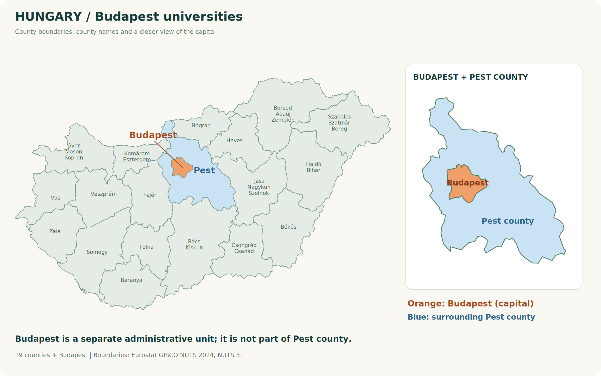

Hungary University Guide
Corvinus University of Budapest
ブダペスト・コルヴィヌス大学｜英語で学ぶ正規留学ガイド
ビジネスの問いを、数学・統計・データで解く。経済・経営・社会科学に重点を置く大学で、英語の学位取得を目指す。
更新：｜写真：corvinus-2026、PDF 16ページ目。Gellért Campusの建物。公式2026–27年版ガイド掲載写真。
Quick Summary
正規留学のポイント
ここで表示する現役生の人数は当サービスの相談対応者数です。大学全体・日本人全体の在学生数ではありません。学費の年度・対象は下の学費欄を確認してください。
Location in Hungary
ハンガリーのどこにある大学？
ブダペスト｜首都・ハンガリーの中央部
本館とGellért Campusなどがあります。実際の通学先は希望課程・時間割で確認しましょう。

About the University
大学と学びの特徴
コルヴィヌス大学は、経済・経営・社会科学を中心に学べる大学です。ブダペストの本館とGellért Campusなど、学習環境も確認したいポイントです。授業場所は課程によって異なるため、自分の時間割と通学先を確認しましょう。
Data Science in Businessは、ビジネスの判断をデータ分析と結びつける英語学士課程です。公式の学位名はBSc。課程名だけでなく、取得学位と学ぶ内容を確認して選びましょう。
Rankings
大学ランキングを年度・種類ごとに見る
| ランキング・範囲 | 版の年度 | 掲載順位 | 出典・補足 |
|---|---|---|---|
| QS World University Rankings（総合） | 2027 | 順位未確認 | QS公式 |
| THE World University Rankings（総合） | 2027 | 1001–1200位 | THE公式 |
| QS World University Rankings（過年度） | 2025 | 1001–1200位 | 公式プロフィールで確認できる過年度の総合順位。2027年版の順位としては扱いません。 公式出典 |
総合順位と分野別順位は、評価対象・指標が異なります。順位帯はそのまま表示しています。ランキングは進学先を比較する材料の一つで、入試の難易度や、特定課程の授業の質・就職を直接示す数値ではありません。
確認：2026年10月5日。2027年版ランキングと2027/28年度入学募集は別の情報です。「未確認」は今回の確認範囲で順位を確定できなかった意味であり、大学の評価が低いことを示すものではありません。数値は確認日時点の掲載情報です。
他の分野のランキングも知りたい方へ
大学ランキングGuideでは、他の分野の確認済み順位や、ハンガリーの大学を比較できます。この大学を選択した状態で分野別の一覧を開きます。掲載のない分野もあります。
他の分野のランキングを見るDegree Programs
英語で学べる学位課程
| 区分 | 課程の例 | 選ぶときの視点 |
|---|---|---|
| 学部 | Data Science in Business BSc | 数学・統計・プログラミングとビジネスを横断。 |
| 学部 | Business and Management／International Business | 経営や国際ビジネス。専攻別要件を確認。 |
| 学部 | International Relations | 国際関係・社会科学。 |
| 修士・博士 | ビジネス・経済・社会科学系課程 | 既修分野、研究・専門要件を確認。 |
Data Science in Business BSc
Data Science in Business BScは英語のみ、4年・8学期、240 ECTSの課程です。数学・統計、Python・SQL・Rなどのデータ処理と、経営・経済の視点を組み合わせます。480時間のインターンシップも含まれます。公式説明では入学前のプログラミング経験は必須としていませんが、数学を使って学ぶ課程である点は意識して準備しましょう。
大学公式の課程案内。全課程の一覧ではありません。
Application & Admission
出願条件と募集年度
公式のAdmissions requirementsから、学歴・英語・数学などの試験条件を確認し、出願ポータルで希望専攻を選びます。私費と奨学金で手続きや締切が異なる場合があるため、同じ専攻名でも出願ルートを分けて確認してください。
2026年10月5日時点の募集情報
Data Science in Business BScの公式専攻ページには、次の開始時期として2027年9月が掲載されています。ただし、この開始時期だけで出願が受付中とは判断できません。募集開始・締切は公式の出願案内で確認してください。
出典：専攻・課程の公式案内 ／ Data Scienceの入学要件.
Tuition & Funding
学費・奨学金・留学予算
公式専攻ページの掲載額（2027年9月開始案内・非EEA学生）
| 項目 | 金額 | 対象・補足 |
|---|---|---|
| Data Science in Business BSc | 3,500 EUR／学期 | 8学期・240 ECTS |
| 同課程の年額換算 | 7,000 EUR／年 | 1年2学期として計算。生活費別 |
| 学部の出願料（現行共通案内） | 100 EUR | 返金不可。年度・適用条件を確認 |
大学公式の学費・課程案内。学費は変更されることがあります。年額と学期額、授業料と出願料を区別して確認してください。
学費に加え、住居・食費・交通・保険・渡航・教材などの予算が必要です。ハンガリー政府奨学金「スティペンディウム・ハンガリカム（Stipendium Hungaricum）」を検討する場合は、希望専攻がその年度・日本向けの対象課程に含まれるか、給付内容と自己負担、出願・推薦の手順を別に確認しましょう。
スティペンディウム・ハンガリカム公式募集案内。2027/28年度の募集要項・日本側の条件は今回の確認では確定していません。
奨学金の仕組みを初めて調べる方へ
ハンガリー政府奨学金「スティペンディウム・ハンガリカム（Stipendium Hungaricum）」の給付内容・応募の流れは、TOPページの基本情報カード「奨学金」から確認できます。大学・専攻ごとの対象課程、募集年度、締切は、各年度の公式募集で確認してください。
基本情報カード「奨学金」を見るCampus Life
キャンパスと学生生活
本館とGellért Campusの雰囲気は異なります。国際学生ガイドでは教室・学習施設と大学生活が紹介されています。グループ課題やプログラミング課題に取り組む場所、授業外で質問できる体制、インターンシップ支援を確認しておくと、自分の学び方との相性が見えます。
Housing
住まいと到着後の準備
International Student Guideを起点に、学生住宅と大学の支援情報を確認しましょう。通学先が本館かGellértかで動線が変わるため、家賃だけでなく移動時間も比較します。入寮条件や民間物件の保証金・光熱費は、契約前に確認してください。
寮の案内があっても、入寮が保証されるわけではありません
公式HPやパンフレットに寮が掲載されていても、空室・選考・申込時期・学年・奨学生／私費学生の区分などによって、入寮できない場合があります。大学・寮ごとの最新の申込条件は公式窓口に確認してください。
実際の入寮状況や住まい探しについては、この大学の現役生に聞いてみてください。現役生の経験は参考になりますが、今後の入寮を保証するものではありません。
この大学の現役生に相談するOfficial University Features
大学公式資料で紹介されている特徴
経済・経営・社会科学と、国際交流・キャリアの接続
International Student Guide 2026–27は、学術交流のパートナー、留学・ダブルディグリーの機会、企業との連携やキャリア支援を紹介しています。学生団体や課外活動を通じた学びも、大学の特徴として挙げています。
出典：International Student Guide 2026–27。資料の年度は各出典に従います。大学全体の紹介と、個別課程の条件・授業内容は分けて確認してください。
Talk to Students
この大学の現役生に相談する
授業・試験・生活の体験を、当サービスに登録している現役生に質問できます。公式の募集条件は大学で確認し、現役生には実際に学び暮らす中での工夫や感想を聞いてみましょう。
現役生情報を読み込み中です。
Sources
公式資料・情報の確認先
記事確認日：2026年10月5日。大学の資料をもとに日本語で編集した進学ガイドです。写真は公式冊子から抽出した実際の掲載写真で、大学キャンパスを模した生成画像ではありません。各写真の資料・ページを明記しています。大学の公式案内を優先して確認してください。